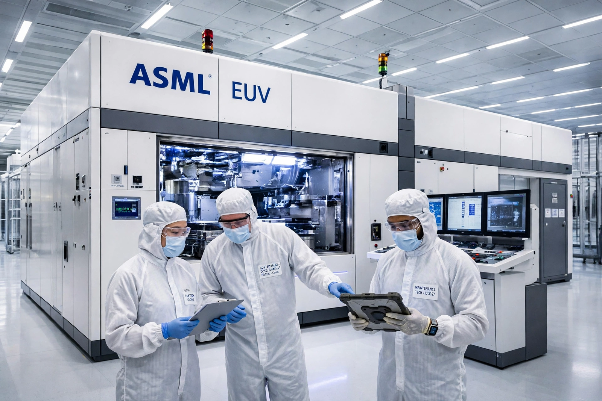

TSMC pioneered the pure-play foundry model. We manufacture other companies' designs — never competing with our customers — on the industry's most advanced process technologies.

N2 technology entered risk production in 2025, with nanosheet transistors delivering full-node performance and power gains; A16 with backside power follows.
N3 family processes power flagship smartphone and AI/HPC silicon for the world's leading fabless companies.
CoWoS, InFO and SoIC 3D packaging integrate chiplets and HBM for AI accelerators at massive scale.
Fabs across Taiwan, plus Arizona (USA), Kumamoto (Japan) and Dresden (Germany) — a resilient, geographically diversified footprint.
Our design ecosystem of EDA, IP and library partners shortens customers' time to market.
Committed to RE100 and net-zero emissions by 2050, with green fabs and water recycling across sites.